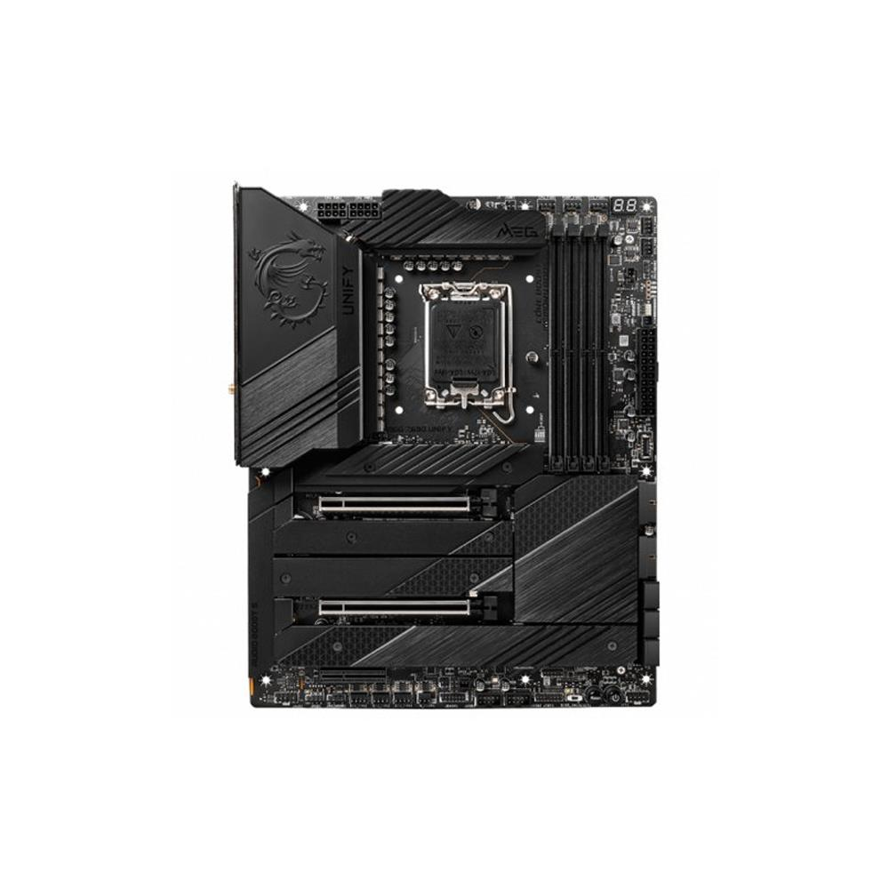

Extreme overclocking için tasarlanmış, minimalist siyah tasarıma sahip, DDR5 ve PCIe 5.0 destekli üst seviye anakart.
| Özellik | Değer |
|---|---|
| Soket | LGA 1700 |
| Chipset | Intel Z690 |
| RAM | 2x DDR5 Slot (64GB’a kadar, yüksek hız OC) |
| PCIe | PCIe 5.0 x16 + ek slotlar |
| Depolama | 5x M.2 NVMe, 6x SATA |